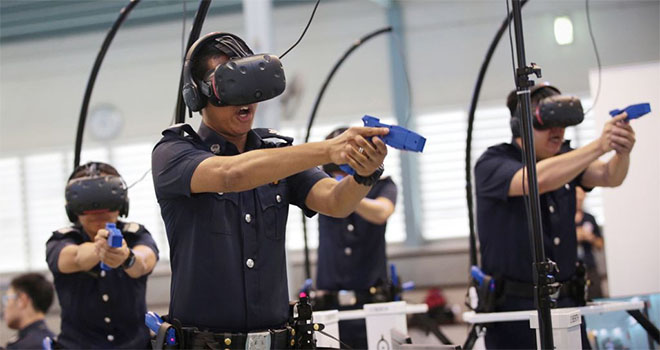

The virtual reality industry was valued at $25.21 billion in 2022 and is predicted to continue to grow in the coming years. Out of this, the VR hardware industry made $7.62 billion, the software industry $2.37 billion, and VR advertising made $151.23 million. All of these numbers are predicted to grow over the next 5 years.
Companies have begun using VR in a variety of ways. One example can be seen in the oil companies BP and ExxonMobil, who both use VR to prepare the workers for the workplace. By using VR to simulate common workplace scenarios such as starting the machines and emergency protocols, this will reduce the likelihood of accidents occuring in the real world. Zimmer Biomet uses VR to show its customers the results of various surgical and dental routines, helping their customers make the best choices. This means that there is also a growth in the number of people needed to develop these simulations, contributing to the massive growth in the VR industry.
Established companies such as Facebook (now known as Meta), Apple, and Microsoft have all begun to invest large amounts of money into VR and AR technologies, and companies such as Magic Leap and Niantic formed to take advantage of this growing industry. Companies such as Matterport will take scans of buildings, which people can then tour virtually from the comfort of their home. Companies have also begun exploring using VR to hold virtual meetings, as opposed to meeting in person or through other digital platforms such as Zoom.
VR has even begun being used by the military and law enforcement as a tool for training, rather than spending money on real props and actors for training exercises.
See the below video to see how Hilton uses VR as a tool to prepare their workforce for the work environment.
Here are some more examples of companies using VR to expand their brand: